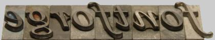
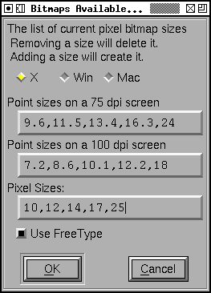
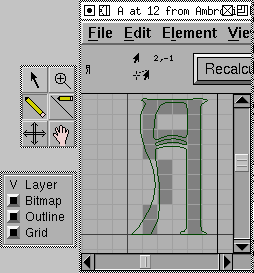

FontForge is primarily an outline font editor, but it does have some facility for editing bitmap (and greymap, or anti-aliased) fonts. A useful term here is a "strike"; a strike is one particular size of a bitmap font. When FontForge displays a font, that font will contain at most one outline but potentially many bitmap (or greymap) strikes (for several different pixel sizes).
You might wonder if it is really necessary to provide bitmaps along with outlines given the high quality results of modern rasterizers, and for Latin (Greek, Cyrillic) fonts it may not be, but for CJK fonts at small pixel sizes a human eye can still make a better choice than even the best rasterizer. Back in the 1980s when Apple first adopted PostScript fonts they felt it was essential to have bitmaps to go with the outline -- so much so that it was not even possible to use a PostScript font without also providing at least one bitmap with it. Even today, when using a Type1 font on a mac there must be a bitmap font to point to it.
Of course Type1 fonts are a bit old-fashioned now, but the sfnt file format (the format used for both OpenType and TrueType fonts) supports embedded bitmap strikes along with the outline version of the font. These strikes will be used in preference to rasterizing the outline in any pixel sizes for which they are present.
If you have an sfnt with both an outline font and bitmap strikes you can open it directly with the File->Open command and FontForge will load all the bits and pieces.
You can also open a bitmap only font directly with the File->Open command, however if you have multiple strikes of the same underlying font in separate files, you will probably want to open only the first (or only the outline version) with Open, and use File->Import to merge the other strikes into one FontForge font.
Suppose you have Ambrosia.pfb (an outline font),
Ambrosia-12.bdf, and Ambrosia-24.bdf (two bitmap
strikes, one 12 pixels high, one 24), and you want them all in one font.
First use File->Open to open Ambrosia.pfb,
then File->Import and select both of
the bitmap strikes (hold down the shift key).
On the other hand, if you have only two bitmaps:
Ambrosia-12.bdf, and Ambrosia-24.bdf, then use
File->Open to open either strike, and
use File->Import and import the other.
You may have noticed that Import has a checkbox labeled [] As
Background. If you check this, then your bitmap font will not be loaded
as a font itself, but will be loaded into the background of the outline font
whence you can
Element->Autotrace
it to provide an outline font from a bitmap. Be warned: This produces fairly
bad results unless you have a large (100+ pixel) font to trace.
If you
want to add a bitmap strike with a given pixel size to a font then use
Element->Bitmap Strikes
Available. Simply add the pixel size you are interested in to
the list at the bottom of the screen.
If you are more comfortable dealing in point sizes, be aware that those depend on screen resolution. This dialog shows you the conversion between point and pixel sizes for two standard resolutions. The resolutions differ depending on what windowing system you use.
You may add more than one pixel size, of course. You may also remove pixel sizes if you no longer want them.
Normally when you create a new strike it will be rasterized from the outline font -- if there is no outline font then FontForge will attempt to scale the biggest strike available to the new size (in most cases this will be fairly ugly, but it may be better than nothing.
There is also a checkbox [*] Create Rasterized Strikes (Not empty
ones) at the bottom of the dialog. If you turn this off, then the
rasterization process described above will not happen, and any new strikes
will be created containing no glyphs (you can add glyphs later, of course).
In the old days of bdf and pcf fonts on X11 each font had a set of properties
attached to it. It is not clear to me whether these properties are still
useful as X11 moves to OpenType Bitmaps. They may be. At any rate FontForge
will store them both in BDF fonts and in OpenType Bitmap fonts. Each strike
may have its own set of properties. FontForge will generate them automatically
when you create a strike (and will retain them when it reads in a font that
has them). You may override the current values with the
Element-Bdf Info dialog.
If you want to create a new font with no outlines, only bitmap strikes, you
would use File->New to create a new font,
and then Element->Bitmap Strikes
Available to add some (empty) strikes to it. As soon as you add
a strike to a new font, the font will become a bitmap only font.
Apple has a bitmap only version of the sfnt file format, and X11 does too. Of course the two formats are slightly different. Windows has no support for a bitmap only sfnt format.
The View menu of the Font
View (and the Metrics View) contains a list of all bitmap strikes in the
font. You may select which one will be displayed in the Font View. You may
also change the magnification at which a strike is displayed with
View->Bitmap Magnification... (it
can be hard to see the details of an 8 pixel font on a high resolution screen,
so you might want to display it at 3 times its actual size).
Many commands in the Font View will apply to all strikes (and the outline)
in the font. For instance
Edit->Copy will copy the
outline glyph and all bitmap glyphs. Sometimes you only want to affect one
strike, if so then deselect
Edit->Copy From->All
Fonts.
The Element->Build
commands will build accented bitmap glyphs just as it builds accented
outline glyphs.
If the Font View is displaying a bitmap strike and you double click on a character, then FontForge will bring up a bitmap editing window displaying that character in the current strike (rather than opening an outline editing window). If the character does not have a matching glyph in the current strike FontForge will create one by rasterizing the outline version of the font.
The bitmap editing window should be fairly self explanatory. The window is a simple bitmap editor. With the pencil tool, clicking on a pixel will make it change. The line tool will draw a straight line between the start and end points.
You can see the outline glyph in the background of the bitmap.
You can regenerate the bitmap (by rasterizing the outline) by pressing the
[Recalculate Bitmaps] button.
Editing an anti-aliased greymap has the added complexity that you need to
select a color (actually a level of greyness) to be applied with the pencil.
There will be an additional palette with all possible greys for
this.
Sometimes you don't need a complete set of bitmap glyphs in a strike. Perhaps
the rasterizer does a good job for all glyphs except one. Then you can create
an empty strike (with
Element->Bitmap Strikes
Available unchecking the [*] Create Rasterized Strikes
checkbox) and then select the one glyph you care about and say
Element->Regenerate Bitmap
Glyphs.
Alternately you could create a fully rasterized strike and then select the
glyphs you don't need and say
Element->Remove Bitmap
Glyphs.